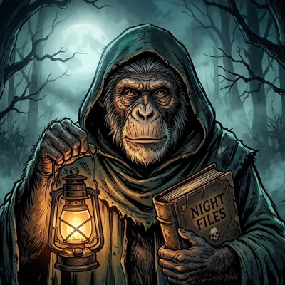

NIGHT FILES
A new scary story every night
Night Files creates original horror stories, real unsolved mysteries and dark legends as short videos, and publishes them to the creator's own TikTok account.
Continue with TikTokBy continuing, you agree to our Terms of Service and Privacy Policy. You'll be asked to approve access on TikTok.
- Connect your TikTok account.
- Night Files writes, narrates and illustrates a new story on a schedule.
- The video is posted to your account (or sent to your drafts to review), labeled as AI-generated.
You can disconnect anytime in TikTok: Settings and privacy → Security → Apps and services permissions.